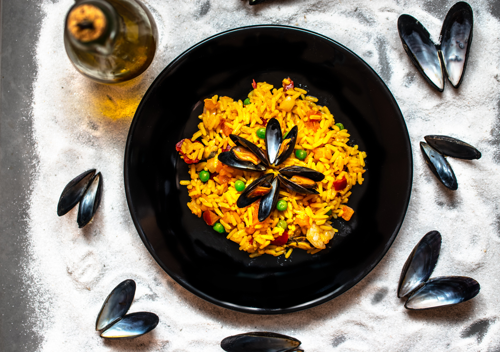
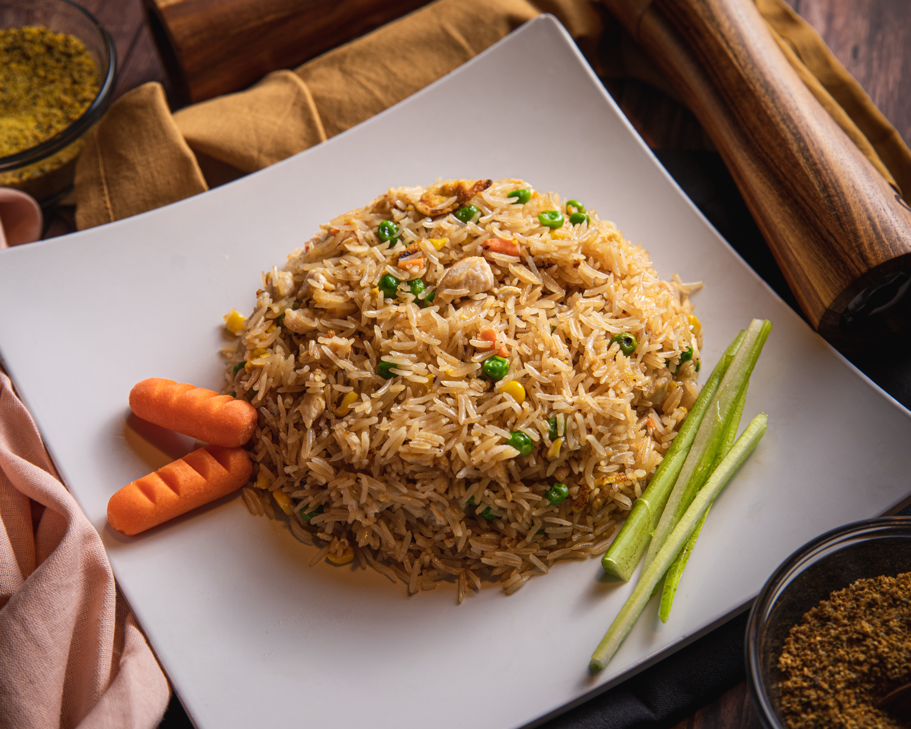

Fried Rice

DESCRIPTION
Fried rice is a popular and delicious dish made by stir-frying cooked rice with a variety of ingredients. It is commonly prepared in many Asian and African cuisines, such as Nigerian, Chinese, Thai, and Indonesian. The dish typically starts with cooked rice that is cooled to prevent it from becoming mushy when stir-fried.
INGREDIENTS
The ingredients commonly used in fried rice include:
- Cooked rice (preferably cooled)
- Vegetables (such as carrots, peas, bell peppers, onions)
- Meat or seafood(chicken, shrimp, beef, pork)
- Scrambled eggs
- Green onions
- Garlic
- Ginger
- Soy sauce, Maggi or other seasonings
- Oil (For stir-fry)
NOTE: The specific ingredients can vary depending on personal preference and regional variations.

STEPS
- Heat a wok or large frying pan over medium-high heat.
- Add a small amount of oil to the pan and swirl it around to coat the surface.
- Add minced garlic and ginger to the hot oil and stir-fry for a few seconds until fragrant.
- Add the diced vegetables to the pan and stir-fry them until they become slightly tender. This usually takes a few minutes.
- Push the vegetables to one side of the pan and crack the eggs into the empty space. Scramble the eggs until they are cooked through.
- Break up any large clumps of cooked rice and add it to the pan. Stir-fry the rice with the vegetables and eggs, ensuring that everything is evenly mixed.
- Drizzle soy sauce or other preferred seasonings over the rice and continue to stir-fry for a few more minutes. Adjust the seasoning according to taste.
- If using meat or seafood, add it to the pan and stir-fry until it is cooked through.
- Finally, sprinkle chopped green onions over the fried rice and give it a final stir.
- Remove the pan from heat and serve the fried rice hot.

Remember, These steps are a basic guideline and you can customize the recipe by adding or omitting ingredients to suit your taste!
CONCLUSION
I trust you're well on your way to entering the Guinness Book of Records with your newly acquired skill!
Now that you know this, you might want to checkout how to make the best Afang Soup!
OR
You might wanna try a little Beans and Dodo delicacy
Go back to Homepage